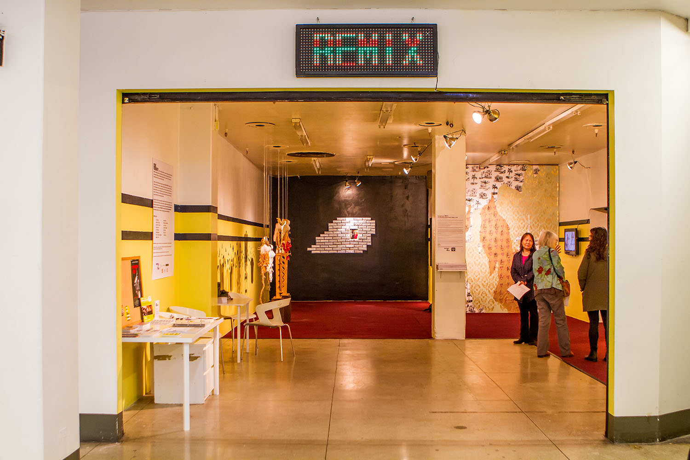
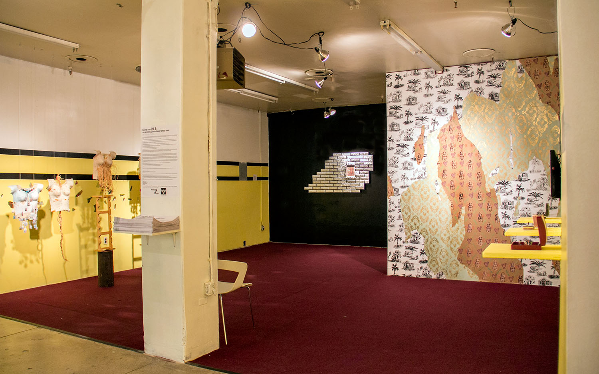
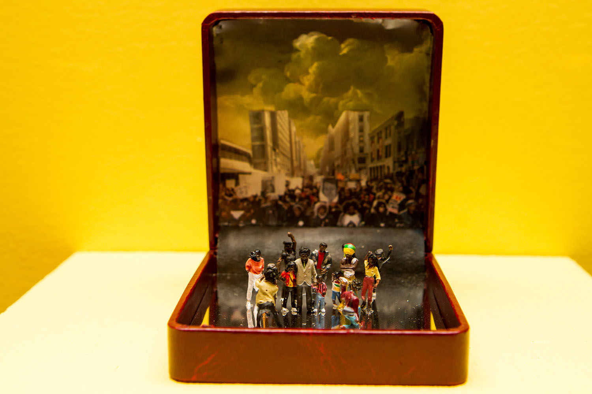
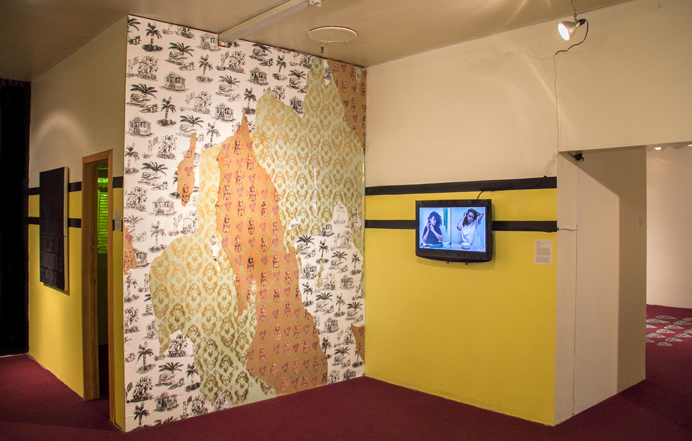
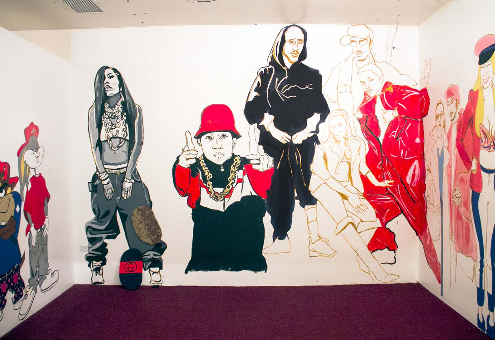
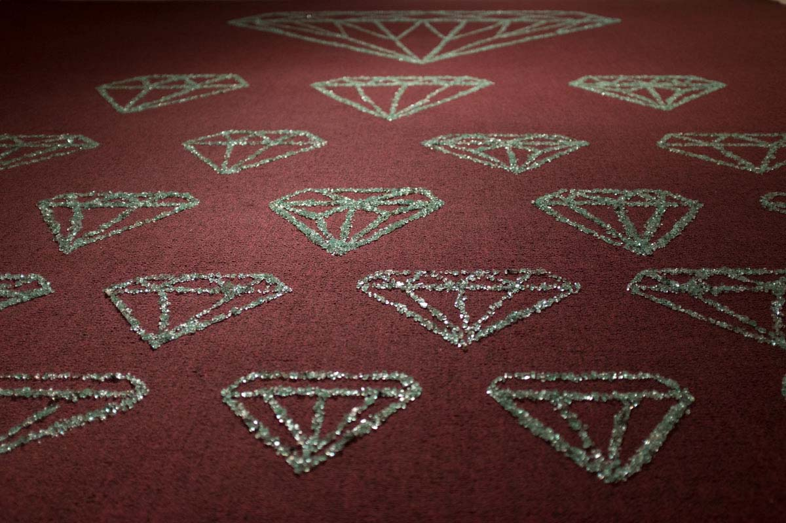
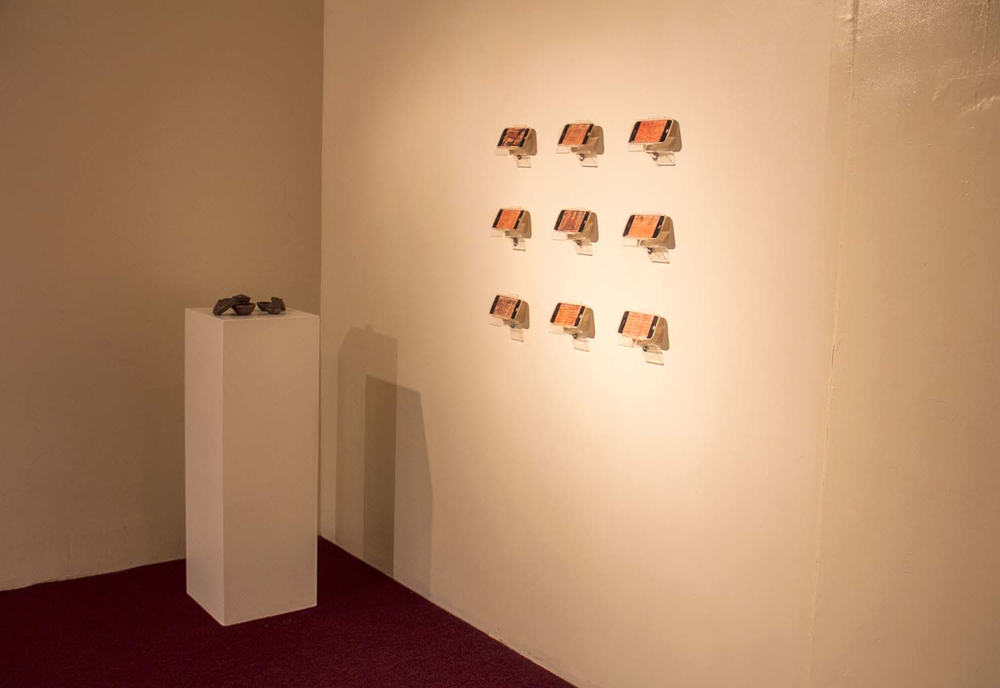
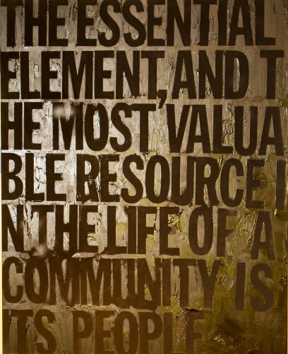

Remix Rememory was a site-responsive exhibition that gathered and reimagined histories as a means to understand personal and collective identities. Featuring borrowed and commissioned works by artists from Jamaica, Queens, and beyond, the exhibition and related public programming explored how memories can be recaptured and preserved through actions, objects, and reframed tales.
Remix Rememory took place in an empty storefront inside The Jamaica Colosseum Mall, an active commercial center that has served as a landmark in hip-hop fashion and music culture since the 1980s. With over 100 independent vendors, including a dental office, food court, hair salons, and spaces of worship and healing, the Mall is a haven for small business owners and consumers, and serves as a site of cultural and capital exchange. The works included in Remix Rememory engaged with the blended space of the Mall—exploring, examining, and recreating local and global archival histories, creative healing, and activism. The exhibition title was conceived in response to the rapidly changing neighborhood. It speaks to the idea of sampling and synthesizing elements of hip-hop music, and Toni Morrison’s concept of rememory—the intentional revisiting of memories.
Artists include: Laura Castro, Robert Craddock, Neal Desai, Rejin Leys & Lan Ding Liu, Ify Chiejina, Sherese Francis, Vandana Jain, Jocelyn M. Goode, Joiri Minaya, Odathrowback, Curtis Talwst Santiago, Ambika Trasi, Kamau Ware.
Remix Rememory took place in an empty storefront inside The Jamaica Colosseum Mall, an active commercial center that has served as a landmark in hip-hop fashion and music culture since the 1980s. With over 100 independent vendors, including a dental office, food court, hair salons, and spaces of worship and healing, the Mall is a haven for small business owners and consumers, and serves as a site of cultural and capital exchange. The works included in Remix Rememory engaged with the blended space of the Mall—exploring, examining, and recreating local and global archival histories, creative healing, and activism. The exhibition title was conceived in response to the rapidly changing neighborhood. It speaks to the idea of sampling and synthesizing elements of hip-hop music, and Toni Morrison’s concept of rememory—the intentional revisiting of memories.
Artists include: Laura Castro, Robert Craddock, Neal Desai, Rejin Leys & Lan Ding Liu, Ify Chiejina, Sherese Francis, Vandana Jain, Jocelyn M. Goode, Joiri Minaya, Odathrowback, Curtis Talwst Santiago, Ambika Trasi, Kamau Ware.

Installation view, Remix Rememory, Jamaica Colosseum Mall, Queens, NY, December 3–December 18, 2016. Photograph: Tara Foster.

Installation view, Remix Rememory, Jamaica Colosseum Mall, Queens, NY, December 3–December 18, 2016. Photograph: Tara Foster.

Detail, Curtis Talwst Santiago, For Freddie, 2016. Mixed Media. 3.75 x 3 x 3.25 inches. Photo: Alex Escalante. Courtesy the artist.

Installation view, (left) Joiri Minaya, Desgrato II, 2016. Acrylic paint, stenciled and linoleum printed patterns on paper and wood. 10 x 7 feet. Commissioned for Remix Rememory. (right) Joiri Minaya, Sábila / Leche, 2015. Single channel video. Duration: 39 minutes. Courtesy of the artist.

Installation view, Jocelyn M. Goode, Hip-Hop Fashion on Jamaica Ave: 90s to Now, 2016. Interactive Mural Installation. Dimensions variable. Commissioned for Remix Rememory. Courtesy the artist.

Installation view, Vandana Jain, Infinite Array, 2016. Automobile glass. 14 x 12 feet. Commissioned for Remix Rememory. Courtesy the artist.

Installation view, (left) Ambika Trasi, Reliquaries, 2011 Rapid prototyping model 3D prints, memory cards, assorted beads. (right) Ambika Trasi, Sacred Apps. 2010, Silkscreen on plexiglass, digital prints on transparencies, basswood. Courtesy the artist.

Detail, Kamau Ware, Black Solidarity, 2016. Video installation and digital print on canvas. Video duration: 6 minutes. Print 45 x 36 inches. Commissioned for Remix Rememory. Courtesy the artist.

Detail, Kamau Ware, Black Solidarity, 2016. Video installation and digital print on canvas. Video duration: 6 minutes. Print 45 x 36 inches. Commissioned for Remix Rememory. Courtesy the artist.
COLLABORATORS
Co-curators: Zalika Azim, Tara Foster, Jordan Greenberg, Abbie Hebein, Shu Cao Mo, Candice Strongwater
Curator and Director of NLE Lab: Rachel Gugelberger
Installation Manager: Kwame Sorrell
PROGRAMS
Chilling Island Radio Broadcast
Public programs included a live radio broadcast with Chillin Island, who hosted their weekly radio show at the Mall, featuring special guests: Odathrowback, Remix Rememory artist; Ras Kefim, store owner of Locks Culture at the Mall; Marchello the Jeweler, and NLE Teen Docents Raymone and LaTavia. Chillin Island is a variety show hosted by Ashok Kondabolu (aka Dapwell) of Das Racist and rappers Despot and Lakutis (Alec Reinstein and Aleksey Weintraub).
The Power of the Word
A reading by writer Sherese Francis was followed by The Power of the Word, a panel discussion moderated by Saiku Branch, with Francis and Barry “Sunjohn” Johnson. Francis read from her science fiction novel The E. Set in Southeast Queens, inspired by the Underground Railroad. The Power of the Word panel discussed and celebrated the historical context of the Black Arts Movement, leading to the development of the Afrikan Poetry Theatre, and its continued cultural impact on American arts, culture, and political movement building.
Undissed and Very Able
In partnership with Jamaica Center for Arts & Learning (JCAL), Zalika Azim and I facilitated an artist-walk through and conversation for the JCAL exhibition, Undissed and Very Able. The exhibition featured a wide range of photographs and digital collages created by over twenty photographers and artists from the Progressive Visions Photo Club. Established in 1997 in Woodside, Queens, the Progressive Visions Photo Club (founded by Jim Interlicchio) works with photographers and artists with various abilities and disabilities as they explore and photograph New York City neighborhoods.
Artists include: Patrick Emproto, Frank Ferebee, Pedro Cruz, Charles Scaturro and Jennifer Ramos, who guided visitors through their work, sharing techniques related to the use of DSLRs (digital single-lens reflex cameras), RAW capable point and shoot, adaptive gear, and the role that photography plays in redefining the self through collage and portraiture.